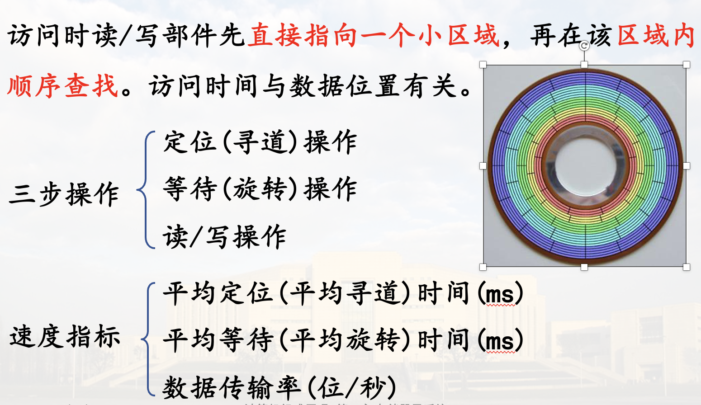

概述
存储子系统的层次结构
存储器是用来存放大量数据与程序的计算机部件
对存储器的基本要求: 容量大 速度快 成本低
因存储器与CPU的工作速度不匹配, 造成了计算机的“瓶颈”问题
- 解决瓶颈的方法:
- 改进制造工艺, 寻求新的存储机理
- 采用分层结构满足对系统结构的不同方面的需求
典型三级存储结构: 高速缓存(Cache)--主存--缓存

1. 主存储器
能由CPU直接编程访问，存放当前CPU需要执行的程序与需要处理的数据
特点：存取速度较快，容量有限
对主存储器的基本要求：
- 随机访问
- 工作速度快
- 具有一定的存储容量
2. 外存储器
存放需要联机保存、但暂不使用的大量程序与数据
特点：速度较慢，容量很大、成本低
程序与数据只有进入主存才能真正运行，外存储器用作后援
3. 高速缓存
存放即将要使用的程序与数据，作为主存中当前活跃信息的副本
特点：速度最快，容量很小，成本高
有效缓解访存的瓶颈问题
比如缓存指令、数组之类
现在可以进一步分成 L1、L2、L3, 分别在CPU内、外, 容量从小到大, 速度从快到慢
存储器按存储介质分类
1. 半导体存储器
由集成电路工艺制成各种存储芯片,用作主存等

静态: 存储器上的信息不需要刷新
动态: 存储器上的信息需要刷新
2. 磁表面存储器
利用磁层上不同方向的磁化区域表示信息
容量大，速度慢，主要用作外存
非破坏性读出(相比半导体)，长期保存信息(非易失)
磁卡、磁鼓、磁带、磁盘等

3. 光盘存储器
利用光斑的有无表示信息
容量很大，非破坏性读出，长期保存，速度慢，作外存
- 只读型光盘（CD-ROM）
- 写入式（只能写一次）光盘（WORM）
- 可擦除/重写型（可逆式）光盘

存储器按存取方式分类
1. 随机访问存储器 (RAM: random access memory)
特点
- 可按地址随机地访问任一存储单元
- 访问各存储单元所需时间相同，与地址无关
速度指标
存取时间：启动读/写操作到完成该操作所需时间
存取周期：连续两次独立访存所需的最小时间间隔(比存取时间大一点)
用作主存、高速缓存
随机访问存储器根据读写特性分类

2. 顺序访问存储器 (SAM: sequential access memory)
信息按顺序存放，访问时间与信息存放位置有关
磁带是采取顺序存取方式的存储器

3. 直接访问存储器 (DAM: direct access memory)
磁盘、光盘是典型的DAM
访问时读/写部件先直接指向一个小区域，再在该区域内顺序查找。访问时间与数据位置有关
